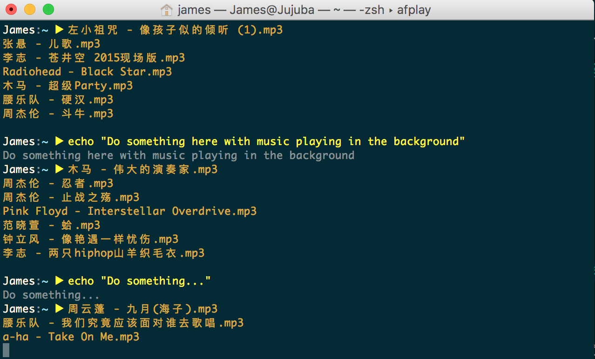
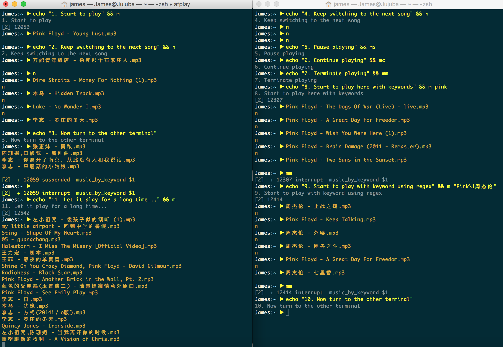

Apr 10, 2018

起因就是对探索新歌失去了兴趣，并且觉得各种音乐播放软件都不怎么好用，而且懒癌发作，觉得写代码的时候想要换歌还要切换到音乐播放器再切回来实在太烦了。于是我把自己喜欢听的歌都下载下来了，放到一个文件夹里，准备用终端播放。整个过程非常简单，我所需要的只是一个想法和几行代码，迭代几次就搞定了。
查了一下网上所谓的终端音乐播放器，似乎都不怎么样，有些还写了巨丑无比的UI，在命令行里画UI是个需要taste的事，画不好就会很丑，显然我不需要这些东西。找着找着，发现macOS上本来就有个命令行播放器，叫afplay，用法也很简单afplay后面加文件名就OK了，我想了想就用它了吧。
一开始想要的功能很简单，我需要方便地随机播放文件夹下的所有歌曲。我想了想，在.zshrc里写下了如下代码：
BYel='\e[0;33m';
function m() {
m_path=~/Music/
song_num="$(ls $m_path | wc -l)" # Total number of songs
timestamp=$(date +%s) # Timestamp as millsecond, e.g. 1523305473
song_index=$(($timestamp%$song_num+1)) # Generate a random song index
song="$(ls $m_path | sed -n "$song_index"p)" # Get the name of the certain song
echo -e "${BYel}$song"
afplay "$m_path$song" # Play it!
}这样的话，每次我在终端里输入m，就可以随机播放一首歌曲。但是此时我面临了四个问题：
下面一个个解决这些问题：
- 我不希望我为了这个“播放器”单独开一个终端，每次我要切歌，我还得先切到那个终端
很简单，将afplay的进程改为后台即可，具体做法是加上一个&号，然后你就可以接着在这个终端里干活了。
如果需要切歌，可以在终端里输入fg，将后台进程调到前台，然后ctrl+C终止之，但是其实问题并没有得到彻底解决。假如你在终端A中听歌，此时你在终端B中工作并产生了切歌的想法，你在终端B中输入fg，afplay的进程并不会被调到前台，你还是得回到终端A去操作这一切，这并不是我们想要的结果。此时我们可以定义一个新的函数n，这个函数主要就是找出afplay的pid，然后使用kill向它发信号并终止该进程，这里使用INT信号，其效用等同于ctrl+C。
function n() {
pid="$(ps -ef | grep afplay | grep -v grep | head -1 | awk '{print $2}')"
kill -INT $pid
}
- 当我连续切歌时，随机性很差，因为文件是按文件名排序的，连续切歌时，时间戳增长不多，往往放来放去都是同一个人的歌，
显然单纯地使用时间戳并不是一个好主意，我们需要别的随机数，Shell其实本身就给我们提供了随机数函数，我们可以通过$((RANDOM))来调用。这里我依然使用了时间戳，我把时间戳和随机数乘起来得到新的随机数再使用，这完全是个人喜好问题，你只用$((RANDOM))也没有关系。这样一来，你在不停切歌的时候，歌曲就不会从随机播放变成了顺序播放了。
function m() {
...
dummy1=$((RANDOM))
timestamp=$(date +%s)
dummy=$(($dummy1*$timestamp))
song_index=$(($dummy%$song_num+1))
...
}
- 目前的播放器实在太佛系了，只能随机放歌，其实有时候我也会想定向检索一首歌的，
这个也很简单，这个播放器运转的流程是1.生成随机数–>2.统计目录下歌曲数目–>3.计算歌曲索引值–>4.获取对应歌曲名–>5.播放歌曲，我们可以在第二步和第四步里加一个过滤器，其实就是一个所有Unix系用户都熟悉的东西，grep，具体代码见下：
BYel='\e[0;33m';
function m() {
m_path=~/Music/
keyword="." # default: play all the songs
if [ -n "$1" ]; then # play songs by keyword
keyword="$1"
fi
song_num="$(ls $m_path | grep -i -e $keyword | wc -l)" # Total num of qualified songs
dummy1=$((RANDOM))
timestamp=$(date +%s)
dummy=$(($dummy1*$timestamp))
song_index=$(($dummy%$song_num+1)) # Generate a random song index
song="$(ls $m_path | grep -i -e $keyword | sed -n "$song_index"p)" # Get the name of the qualified song
echo -e "${BYel}$song"
afplay "$m_path$song" &
}这样一来，我们就可以使用关键字检索我们要听的歌了，实际上，我们可以看作，每次听歌的时候，该播放器都临时生成了一张歌单，这个歌单是由所有满足你关键字的歌组成的。酷炫的是，由于我们使用了强大的grep，所以输入的关键字可以是充满想象力的正则表达式 ;)
- 每首歌放完之后都要重新输入m才可以开始下一首，是否可以自动播放下一首。
这里需要用到while循环和wait，while(1)死循环就是为了一直播放音乐，wait主要是为了等待前面的命令执行完毕，在这里afplay什么时候执行完毕呢，就是一首歌放完的时候，所以正好一首放完就可以开始放下一首了。当然要注意这里不能让afplay后台了，因为这会使wait失效，此处我们令整个函数后台运行。为了保持之前我们只要在命令行里输入一个m就开始放歌的简易方式，我们重命名原函数为music_by_keyword()然后用一个m()函数将这个函数包裹起来，这样一来，它的运行方式就跟之前一样了。
function m() {
music_by_keyword $1 &
}
BYel='\e[0;33m';
function music_by_keyword() {
m_path=~/Music/
keyword="." # default: play all the songs
if [ -n "$1" ]; then # play songs by keyword
keyword="$1"
fi
song_num="$(ls $m_path | grep -i -e $keyword | wc -l)" # Total num of qualified songs
while [ 1 ]
do
dummy1=$((RANDOM))
timestamp=$(date +%s)
dummy=$(($dummy1*$timestamp))
song_index=$(($dummy%$song_num+1)) # Generate a random song index
song="$(ls $m_path | grep -i -e $keyword | sed -n "$song_index"p)" # Get the name of the qualified song
echo -e "${BYel}$song"
afplay "$m_path$song"
wait
done
}最后，我们可以使用kill的信号量拓展一下这个播放器的功能，比如切歌／终止／暂停／继续：
function n() { # next song
pid="$(ps -ef | grep afplay | grep -v grep | head -1 | awk '{print $2}')"
kill -INT $pid
}
function mm() { # terminate afplay
pid="$(ps -ef | grep afplay | grep -v grep | head -1 | awk '{print $2}')"
ppid="$(ps -ef | grep afplay | grep -v grep | head -1 | awk '{print $3}')"
kill -INT $ppid && kill -INT $pid
}
function ms() { # music stop
ppid="$(ps -ef | grep afplay | grep -v grep | head -1 | awk '{print $3}')"
pid="$(ps -ef | grep afplay | grep -v grep | head -1 | awk '{print $2}')"
kill -TSTP $pid && kill -TSTP $ppid
}
function mc() { # music continue
ppid="$(ps -ef | grep afplay | grep -v grep | head -1 | awk '{print $3}')"
pid="$(ps -ef | grep afplay | grep -v grep | head -1 | awk '{print $2}')"
kill -CONT $pid && kill -CONT $ppid
}
(The End)
[Return to the homepage]